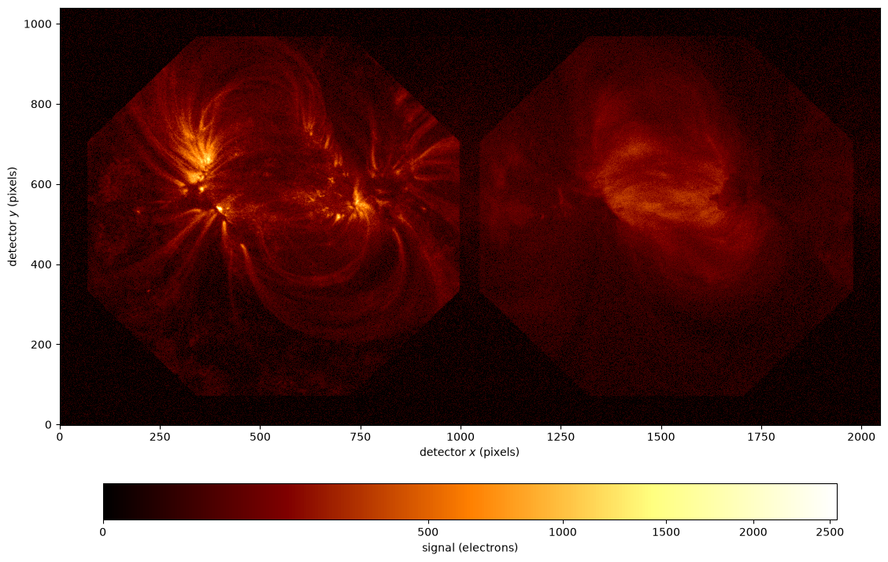

Synthetic ESIS-II Images#
This report simulates one exposure from one channel of ESIS-II, from a real solar scene: the active-region pair NOAA 12565 and 12567 observed by SDO/AIA on 2016 July 15 at 00:00 UT.
The scene is esis.flights.f2.data.synth.scene_dem().
The differential emission measure (DEM) of each AIA pixel is inverted from the six
optically thin EUV channels with utu.dem.plowman(), against the CHIANTI 11
temperature response of sdo.aia.temperature_response(),
and the spectrum of the plasma it describes is computed from the CHIANTI atomic
database with utu.spectrum, for every line in the ESIS-II passband which
carries at least half a percent of its radiance.
Each line is spread over bins of velocity by the thermal motion of its ions, at rest.
[1]:
import matplotlib.colors
import matplotlib.pyplot as plt
import numpy as np
import astropy.units as u
import astropy.visualization
import named_arrays as na
import esis
The scene#
The axes of the AIA pixels are renamed, so that they can’t be mistaken for the axes of the ESIS-II detector the scene is imaged onto. The first call downloads the AIA images and computes the contribution functions of the lines, which takes about a quarter of an hour; both are cached afterwards.
[2]:
axis_x = "scene_x"
axis_y = "scene_y"
scene = esis.flights.f2.data.synth.scene_dem(
axis_detector_x=axis_x,
axis_detector_y=axis_y,
)
scene.outputs.shape
WARNING: VerifyWarning: Invalid 'BLANK' keyword in header. The 'BLANK' keyword is only applicable to integer data, and will be ignored in this HDU. [astropy.io.fits.hdu.image]
2026-10-22 17:33:39 - fiasco - WARNING: VerifyWarning: Invalid 'BLANK' keyword in header. The 'BLANK' keyword is only applicable to integer data, and will be ignored in this HDU.
WARNING: VerifyWarning: Invalid 'BLANK' keyword in header. The 'BLANK' keyword is only applicable to integer data, and will be ignored in this HDU. [astropy.io.fits.hdu.image]
2026-10-22 17:33:40 - fiasco - WARNING: VerifyWarning: Invalid 'BLANK' keyword in header. The 'BLANK' keyword is only applicable to integer data, and will be ignored in this HDU.
WARNING: VerifyWarning: Invalid 'BLANK' keyword in header. The 'BLANK' keyword is only applicable to integer data, and will be ignored in this HDU. [astropy.io.fits.hdu.image]
2026-10-22 17:33:43 - fiasco - WARNING: VerifyWarning: Invalid 'BLANK' keyword in header. The 'BLANK' keyword is only applicable to integer data, and will be ignored in this HDU.
WARNING: VerifyWarning: Invalid 'BLANK' keyword in header. The 'BLANK' keyword is only applicable to integer data, and will be ignored in this HDU. [astropy.io.fits.hdu.image]
2026-10-22 17:33:45 - fiasco - WARNING: VerifyWarning: Invalid 'BLANK' keyword in header. The 'BLANK' keyword is only applicable to integer data, and will be ignored in this HDU.
WARNING: VerifyWarning: Invalid 'BLANK' keyword in header. The 'BLANK' keyword is only applicable to integer data, and will be ignored in this HDU. [astropy.io.fits.hdu.image]
2026-10-22 17:33:47 - fiasco - WARNING: VerifyWarning: Invalid 'BLANK' keyword in header. The 'BLANK' keyword is only applicable to integer data, and will be ignored in this HDU.
WARNING: VerifyWarning: Invalid 'BLANK' keyword in header. The 'BLANK' keyword is only applicable to integer data, and will be ignored in this HDU. [astropy.io.fits.hdu.image]
2026-10-22 17:33:48 - fiasco - WARNING: VerifyWarning: Invalid 'BLANK' keyword in header. The 'BLANK' keyword is only applicable to integer data, and will be ignored in this HDU.
WARNING: VerifyWarning: Invalid 'BLANK' keyword in header. The 'BLANK' keyword is only applicable to integer data, and will be ignored in this HDU. [astropy.io.fits.hdu.image]
2026-10-22 17:33:50 - fiasco - WARNING: VerifyWarning: Invalid 'BLANK' keyword in header. The 'BLANK' keyword is only applicable to integer data, and will be ignored in this HDU.
WARNING: VerifyWarning: Invalid 'BLANK' keyword in header. The 'BLANK' keyword is only applicable to integer data, and will be ignored in this HDU. [astropy.io.fits.hdu.image]
2026-10-22 17:33:52 - fiasco - WARNING: VerifyWarning: Invalid 'BLANK' keyword in header. The 'BLANK' keyword is only applicable to integer data, and will be ignored in this HDU.
WARNING: VerifyWarning: Invalid 'BLANK' keyword in header. The 'BLANK' keyword is only applicable to integer data, and will be ignored in this HDU. [astropy.io.fits.hdu.image]
2026-10-22 17:33:55 - fiasco - WARNING: VerifyWarning: Invalid 'BLANK' keyword in header. The 'BLANK' keyword is only applicable to integer data, and will be ignored in this HDU.
WARNING: VerifyWarning: Invalid 'BLANK' keyword in header. The 'BLANK' keyword is only applicable to integer data, and will be ignored in this HDU. [astropy.io.fits.hdu.image]
2026-10-22 17:33:56 - fiasco - WARNING: VerifyWarning: Invalid 'BLANK' keyword in header. The 'BLANK' keyword is only applicable to integer data, and will be ignored in this HDU.
WARNING: VerifyWarning: Invalid 'BLANK' keyword in header. The 'BLANK' keyword is only applicable to integer data, and will be ignored in this HDU. [astropy.io.fits.hdu.image]
2026-10-22 17:33:58 - fiasco - WARNING: VerifyWarning: Invalid 'BLANK' keyword in header. The 'BLANK' keyword is only applicable to integer data, and will be ignored in this HDU.
WARNING: VerifyWarning: Invalid 'BLANK' keyword in header. The 'BLANK' keyword is only applicable to integer data, and will be ignored in this HDU. [astropy.io.fits.hdu.image]
2026-10-22 17:34:00 - fiasco - WARNING: VerifyWarning: Invalid 'BLANK' keyword in header. The 'BLANK' keyword is only applicable to integer data, and will be ignored in this HDU.
WARNING: FITSFixedWarning: 'datfix' made the change 'Set MJD-OBS to 57584.000001 from DATE-OBS'. [astropy.wcs.wcs]
2026-10-22 17:34:00 - fiasco - WARNING: FITSFixedWarning: 'datfix' made the change 'Set MJD-OBS to 57584.000001 from DATE-OBS'.
WARNING: FITSFixedWarning: 'datfix' made the change 'Set MJD-OBS to 57584.000088 from DATE-OBS'. [astropy.wcs.wcs]
2026-10-22 17:34:00 - fiasco - WARNING: FITSFixedWarning: 'datfix' made the change 'Set MJD-OBS to 57584.000088 from DATE-OBS'.
WARNING: FITSFixedWarning: 'datfix' made the change 'Set MJD-OBS to 57584.000120 from DATE-OBS'. [astropy.wcs.wcs]
2026-10-22 17:34:00 - fiasco - WARNING: FITSFixedWarning: 'datfix' made the change 'Set MJD-OBS to 57584.000120 from DATE-OBS'.
WARNING: FITSFixedWarning: 'datfix' made the change 'Set MJD-OBS to 57584.000068 from DATE-OBS'. [astropy.wcs.wcs]
2026-10-22 17:34:01 - fiasco - WARNING: FITSFixedWarning: 'datfix' made the change 'Set MJD-OBS to 57584.000068 from DATE-OBS'.
WARNING: FITSFixedWarning: 'datfix' made the change 'Set MJD-OBS to 57583.999984 from DATE-OBS'. [astropy.wcs.wcs]
2026-10-22 17:34:01 - fiasco - WARNING: FITSFixedWarning: 'datfix' made the change 'Set MJD-OBS to 57583.999984 from DATE-OBS'.
WARNING: FITSFixedWarning: 'datfix' made the change 'Set MJD-OBS to 57584.000019 from DATE-OBS'. [astropy.wcs.wcs]
2026-10-22 17:34:01 - fiasco - WARNING: FITSFixedWarning: 'datfix' made the change 'Set MJD-OBS to 57584.000019 from DATE-OBS'.
WARNING: FITSFixedWarning: 'datfix' made the change 'Set MJD-OBS to 57584.000140 from DATE-OBS'. [astropy.wcs.wcs]
2026-10-22 17:34:01 - fiasco - WARNING: FITSFixedWarning: 'datfix' made the change 'Set MJD-OBS to 57584.000140 from DATE-OBS'.
WARNING: FITSFixedWarning: 'datfix' made the change 'Set MJD-OBS to 57584.000227 from DATE-OBS'. [astropy.wcs.wcs]
2026-10-22 17:34:01 - fiasco - WARNING: FITSFixedWarning: 'datfix' made the change 'Set MJD-OBS to 57584.000227 from DATE-OBS'.
WARNING: FITSFixedWarning: 'datfix' made the change 'Set MJD-OBS to 57584.000259 from DATE-OBS'. [astropy.wcs.wcs]
2026-10-22 17:34:01 - fiasco - WARNING: FITSFixedWarning: 'datfix' made the change 'Set MJD-OBS to 57584.000259 from DATE-OBS'.
WARNING: FITSFixedWarning: 'datfix' made the change 'Set MJD-OBS to 57584.000206 from DATE-OBS'. [astropy.wcs.wcs]
2026-10-22 17:34:01 - fiasco - WARNING: FITSFixedWarning: 'datfix' made the change 'Set MJD-OBS to 57584.000206 from DATE-OBS'.
WARNING: FITSFixedWarning: 'datfix' made the change 'Set MJD-OBS to 57584.000123 from DATE-OBS'. [astropy.wcs.wcs]
2026-10-22 17:34:01 - fiasco - WARNING: FITSFixedWarning: 'datfix' made the change 'Set MJD-OBS to 57584.000123 from DATE-OBS'.
WARNING: FITSFixedWarning: 'datfix' made the change 'Set MJD-OBS to 57584.000158 from DATE-OBS'. [astropy.wcs.wcs]
2026-10-22 17:34:01 - fiasco - WARNING: FITSFixedWarning: 'datfix' made the change 'Set MJD-OBS to 57584.000158 from DATE-OBS'.
[2]:
{'line': 22, 'scene_y': 833, 'scene_x': 834, 'velocity': 20}
The radiance of each line is its spectral radiance summed over its bins of velocity. The two lines ESIS-II was designed for are the brightest, followed by the weaker line of the Si XII doublet and the Mg VII and Mg VIII lines at the short end of the passband.
[3]:
width = np.diff(scene.inputs.wavelength, axis="velocity")
radiance = (scene.outputs * width).sum("velocity")
rest = scene.inputs.wavelength_rest
mean = radiance.mean((axis_x, axis_y))
fraction = mean / mean.sum("line")
print(f"{'wavelength':>12}{'radiance':>12}{'fraction':>10}")
for i in np.argsort(-mean.ndarray.value):
index = dict(line=i)
print(
f"{rest[index].ndarray.to_value(u.AA):12.3f}"
f"{mean[index].ndarray.value:12.1f}"
f"{fraction[index].ndarray.value:10.3f}"
)
wavelength radiance fraction
499.406 291.5 0.271
465.221 234.5 0.218
520.665 141.1 0.131
436.733 86.1 0.080
434.927 52.7 0.049
430.454 52.4 0.049
431.323 30.9 0.029
435.646 22.6 0.021
447.357 20.7 0.019
443.973 17.5 0.016
467.427 15.6 0.014
445.700 14.2 0.013
433.179 14.2 0.013
510.042 13.5 0.013
482.994 11.5 0.011
481.489 9.2 0.009
431.198 8.7 0.008
436.660 8.4 0.008
487.042 8.3 0.008
444.219 8.0 0.007
434.730 7.8 0.007
439.176 6.1 0.006
[4]:
lines = {
r"Ne VII 465 $\AA$": esis.flights.f2.wavelength_Ne_VII,
r"Si XII 499 $\AA$": esis.flights.f2.wavelength_Si_XII,
}
with astropy.visualization.quantity_support():
fig, axs = plt.subplots(
ncols=2,
figsize=(9, 4.5),
sharey=True,
constrained_layout=True,
)
for ax, (name, w) in zip(axs, lines.items()):
index = np.argmin(np.abs(rest - w), axis="line")
na.plt.pcolormesh(
scene.inputs.position,
C=np.sqrt(radiance[index].value),
ax=ax,
cmap="afmhot",
)
ax.set_title(name)
ax.set_aspect("equal")
fig.supxlabel("offset from the boresight in $x$ (arcsec)")
fig.supylabel("offset from the boresight in $y$ (arcsec)")

The instrument#
The forward model is a single channel of the current ESIS-II design,
esis.flights.f2.optics.design_single(), with its own sensor: the quantum
efficiency of its CCD, the length of one exposure of its camera, and the read noise
of its readout.
[5]:
instrument = esis.flights.f2.optics.design_single(num_distribution=0)
system = instrument.system
system.sensor.timedelta_exposure, system.sensor.read_noise
[5]:
(<Quantity 1.2 s>, <Quantity 10.5 electron>)
Projection onto the detector#
The scene is imaged through a linear approximation of the optical system,
optika.systems.SequentialSystem.linearize(), which fits the distortion,
vignetting, effective area, and field stop of the system and then images the scene by
conservative regridding, without the sampling noise of a ray trace.
One approximation covers the whole passband, sampled about every angstrom; a cubic
distortion puts every line within a few hundredths of a pixel of where a fit to that
line alone puts it.
The lines are imaged one at a time, since the regridding weights of
optika.systems.LinearSystem.weights() take a few gigabytes per line.
optika.systems.LinearSystem.image_from_weights() exposes each line with its own
shot noise, but is not asked to integrate over wavelength, which would add the read
noise of the sensor once per line.
The read noise is added once at the end instead, for the single readout of the sensor.
[6]:
linear = system.linearize(
wavelength=na.linspace(
start=instrument.wavelength_min,
stop=instrument.wavelength_max,
axis="_wavelength",
num=105,
),
degree=2,
degree_distortion=3,
)
axis_field = (axis_x, axis_y)
electrons = 0
for i in range(rest.shape["line"]):
line = scene[dict(line=i)].explicit
weights = linear.weights(
coordinates=line.inputs,
axis_wavelength="velocity",
axis_field=axis_field,
)
image = linear.image_from_weights(
weights,
line,
axis_wavelength="velocity",
axis_field=axis_field,
integrate=False,
)
electrons = electrons + image.outputs.sum("velocity")
# the single readout of the sensor
electrons = na.random.normal(loc=electrons, scale=linear.sensor.read_noise)
The simulated exposure#
The electrons each pixel collects in one exposure, on a square-root scale, with the shot noise of the photons and the read noise of the camera. The read noise makes the darkest pixels negative, which are drawn as zero.
The Ne VII and Si XII images of the octagonal field stop land side by side on the detector, on either side of its center. Ne VII shows the cool fan loops and moss of the two active regions, and Si XII their hot cores. The fainter octagons are lines near the peak of the effective area. Fe XIV 467.4 Å lies almost on top of Ne VII, Fe XV 481.5 Å, Ne V 483.0 Å and Fe XIII 487.0 Å straddle the center of the detector, and Fe XIII 510.0 Å and the weaker line of the Si XII doublet, 520.7 Å, run off its right edge. The Mg VII and Mg VIII lines at the short end of the passband are bright in the scene but hardly detected, since the coatings reflect little of them, and their images fall mostly off the left edge.
[7]:
signal = electrons.to(u.electron).value.ndarray_aligned(("detector_y", "detector_x"))
fig, ax = plt.subplots(figsize=(12, 7), constrained_layout=True)
img = ax.imshow(
signal,
norm=matplotlib.colors.PowerNorm(gamma=1 / 2, vmin=0),
origin="lower",
cmap="afmhot",
interpolation="none",
)
ax.set_xlabel("detector $x$ (pixels)")
ax.set_ylabel("detector $y$ (pixels)")
colorbar = fig.colorbar(img, ax=ax, orientation="horizontal", shrink=0.8)
colorbar.set_label("signal (electrons)")
